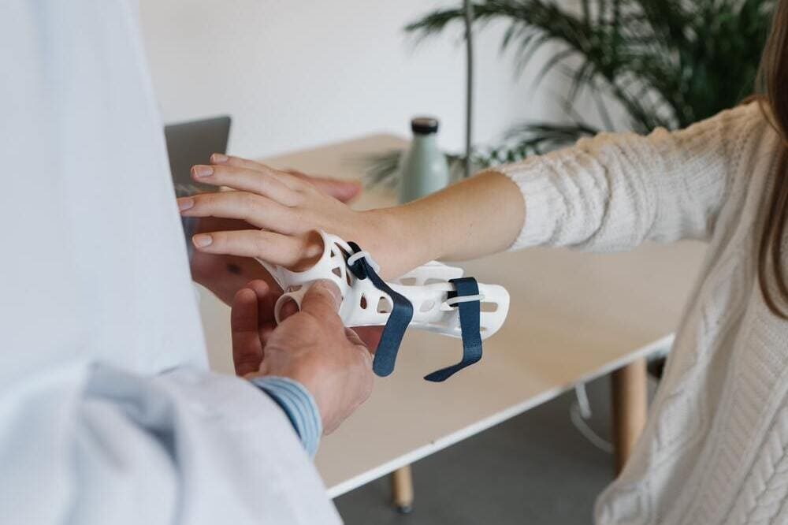

Tecnología al servicio de la vida: Diseño e impresión 3D para la asistencia en el Planeta
La tecnología de diseño e impresión en 3D está permitiendo la creación de soluciones personalizadas y específicas para las necesidades de las personas y animales, lo que ayuda a mejorar su calidad de vida y su bienestar en el planeta.

Contamos con un equipo de diseñadores e ingenieros para desarrollar los prototipos y artefactos finales para brindar una mayor calidad de vida al ser humanos y los animales que nos rodean, tanto domesticos como salvajes. Teniendo en cuenta siempre el impacto ambiental.